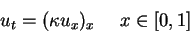
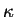
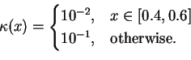
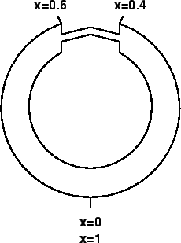
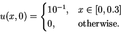
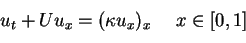

A one-dimensional
model is proposed for the diffusion of a contaminants in a thin
circular canal,


is a function of x as follows:



Attempt to compute the solution with U=0.1, 1, and 10. What behavior do you observe?
How do your results change from the second problem?